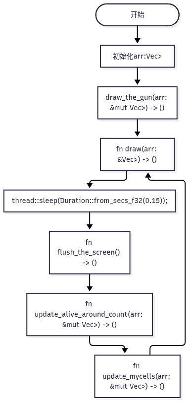

自制康威生命游戏(高斯帕机枪)
简介
康威生命游戏（英语：Conway's Game of Life），又称康威生命棋,是英国数学家约翰·何顿·康威在1970年发明的细胞自动机.
它最初于1970年10月在《科学美国人》杂志上马丁·葛登能的“数学游戏”专栏出现.
核心规则
每个细胞有两种状态- 存活或死亡，每个细胞与以自身为中心的周围八格细胞产生互动（如图，黑色为存活，白色为死亡）
- 当前细胞为存活状态时，当周围的存活细胞低于2个时（不包含2个），该细胞变成死亡状态。（模拟生命数量稀少）
- 当前细胞为存活状态时，当周围有2个或3个存活细胞时，该细胞保持原样。
- 当前细胞为存活状态时，当周围有超过3个存活细胞时，该细胞变成死亡状态。（模拟生命数量过多）
- 当前细胞为死亡状态时，当周围有3个存活细胞时，该细胞变成存活状态。（模拟繁殖）
代码实现
(核心) fn main()
- 核心的程序循环所在处
fn main() {
// init an 2D vector
let cols: usize = 40;
let rows: usize = 100;
let mut arr: Vec<Vec<MyCell>> = (0..cols)
.map(|_| {
(0..rows)
.map(|_| MyCell {
is_alive: false,
alive_around_cnt: 0,
})
.collect()
})
.collect();
// draw the gun(绘制"高斯帕机枪")
draw_the_gun(&mut arr);
// start the main loop("开始进行核心主循环")
loop {
draw(&arr);
thread::sleep(Duration::from_secs_f32(0.15));
flush_the_screen();
update_alive_around_count(&mut arr);
update_mycells(&mut arr);
}
}
(核心) struct MyCell
- is_alive: true->当前细胞存活,flase->当前细胞死亡;
alive_around_cnt->当前细胞周围的存活细胞数量;
struct MyCell {
is_alive: bool,
alive_around_cnt: usize,
}
fn draw_the_gun(arr: &mut Vec<Vec<MyCell>>) -> ()
- 绘制高斯帕机枪
fn draw_the_gun(arr: &mut Vec<Vec<MyCell>>) -> () {
let directions: [(usize, usize); 36] = [
(24, 0),
(22, 1),
(24, 1),
(12, 2),
(13, 2),
(20, 2),
(21, 2),
(34, 2),
(35, 2),
(11, 3),
(15, 3),
(20, 3),
(21, 3),
(34, 3),
(35, 3),
(0, 4),
(1, 4),
(10, 4),
(16, 4),
(20, 4),
(21, 4),
(0, 5),
(1, 5),
(10, 5),
(14, 5),
(16, 5),
(17, 5),
(22, 5),
(24, 5),
(10, 6),
(16, 6),
(24, 6),
(11, 7),
(15, 7),
(12, 8),
(13, 8),
];
for (dr, dc) in directions {
set_seeds_alive(arr, dr + 2, dc + 25);
}
}
fn draw(arr: &Vec<Vec<MyCell>>) -> ()
- 绘制"一次"当前的生命游戏图("O"表示存活细胞,"-"表示死亡细胞)
// draw the current cells' status
fn draw(arr: &Vec<Vec<MyCell>>) -> () {
for i in arr {
for j in i {
match j.is_alive {
true => print!("O"),
false => print!("-"),
}
}
print!("\n");
}
}
thread::sleep(Duration::from_secs_f32(0.15))
- 就是让当前的程序停止0.15秒再运行,防止"draw()"
还没在终端画完所有字符就继续执行了
thread::sleep(Duration::from_secs_f32(0.15));
fn flush_the_screen() -> ()
- 向终端写入"\x1B[2J\x1B[H"清空屏幕并把光标移动到左上角
fn flush_the_screen() -> () {
print!("\x1B[2J\x1B[H");
}
fn update_alive_around_count(arr: &mut Vec<Vec<MyCell>>) -> ()
- 遍历arr,更新arr中每个MyCell(细胞)周围的存活细胞数并存入MyCell结构体
的"alive_around_cnt"成员中,方便统一管理MyCell
fn update_alive_around_count(arr: &mut Vec<Vec<MyCell>>) -> () {
let max_cols: usize = arr.len() - 1;
let max_rows: usize = arr[0].len() - 1;
for i in 0..max_cols {
for j in 0..max_rows {
match count_cells_around(&arr, i, j) {
-1 => continue,
count => arr[i][j].alive_around_cnt = count as usize,
}
}
}
}
fn update_mycells(arr: &mut Vec<Vec<MyCell>>) -> ()
- 遍历arr,根据MyCell结构体中的"alive_around_cnt"和
"is_alive"判断"下一代"时当前细胞的"is_alive"状态
fn update_mycells(arr: &mut Vec<Vec<MyCell>>) -> () {
let max_cols: usize = arr.len() - 1;
let max_rows: usize = arr[0].len() - 1;
for i in 0..max_cols {
for j in 0..max_rows {
match arr[i][j].is_alive {
true => {
if arr[i][j].alive_around_cnt < 2 {
arr[i][j].is_alive = false;
} else if arr[i][j].alive_around_cnt > 3 {
arr[i][j].is_alive = false;
}
}
false => {
if arr[i][j].alive_around_cnt == 3 {
arr[i][j].is_alive = true;
}
}
}
}
}
}
程序流程图
flowchart TD
A([开始]) --> B["初始化arr:Vec<Vec<MyCell>>"]
B --> C["draw_the_gun(arr: &mut Vec<Vec<MyCell>>) -> ()"]
C --> D["fn draw(arr: &Vec<Vec<MyCell>>) -> ()"]
D --> E["thread::sleep(Duration::from_secs_f32(0.15));"]
E --> F["fn flush_the_screen() -> ()"]
F --> G["fn update_alive_around_count(arr: &mut Vec<Vec<MyCell>>) -> ()"]
G --> H["fn update_mycells(arr: &mut Vec<Vec<MyCell>>) -> ()"]
H --> D
- 求值结果

杂谈总结
才疏学浅,想着练练手于是开始写这个有意思的小项目,然后记录一下过程
,后面也会继续写着几个有意思的小项目拿来分享;作为rust初学者,写这
个代码过程中还是遇到很多困难,但我尽量避免了使用ai辅助编码和答疑
以更加充分地训练自己快速学习一个新的编程语言的能力,还有阅读保存信
息,查阅文档的能力;这次写代码让我发现自己似乎更喜欢这种按照兴趣自
由探索书写代码的过程,我似乎更喜欢一个没有明确目的的"冒险式"编程,
而不是去做八股文的算法题(但是适当做那些算法题目还是很有必要的orz.
好吧大概就是这样,一个小无聊又小有趣的生命游戏极简原型的博客就写这
么多吧哈哈